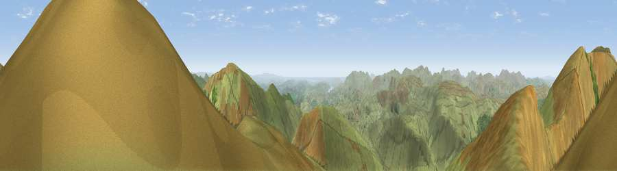

Dollywaggon Pike
#1041 in England · top 8% of its area beats it · near GrasmereWhere it is
The exact computed spot (NY 34575 12975). Click the marker for map links.
The view, rendered

A 360° render of this exact spot computed from the terrain model, tree cover and land cover — summer colours, afternoon light, calibrated against photographs of famous viewpoints. Real trees, hedges and buildings will differ in detail.
The panorama
Grey silhouette: terrain skyline in each direction (720 bearings, Earth curvature and refraction included). Dashed green: skyline with trees (+15 m) and buildings (+8 m) as obstacles. Blue strip: how far the ground is visible on each bearing.
Where the view opens
Wedge length = distance to the farthest visible ground on that bearing (vegetation-aware). Rings at 10, 25 and 50 km.
What fills the view
96% grassland · 3% woodland
Angular shares of the visible panorama (visual magnitude), not map area. Landscape diversity 0.08 (0–1 Shannon).
Key numbers
More beautiful places nearby
The staircase of upgrades: each row has a higher view potential than everything closer. Driving times are estimates from straight-line distance, calibrated against real road routing — check an actual route before setting out.
| Place | Direction | Drive | Score |
|---|---|---|---|
| High Crag | NNW · 1 km | ~2 min | 81.8 |
| Viewpoint near Legburthwaite | NNW · 2 km | ~6 min | 83.8 |
| Viewpoint near Legburthwaite | NNW · 3 km | ~8 min | 84.5 |
| Old Man of Coniston | SSW · 17 km | ~30 min | 85.2 |
| Pillar | W · 17 km | ~30 min | 86.8 |
| Long Side | NNW · 18 km | ~31 min | 89.5 |
| Viewpoint near Finsthwaite | S · 25 km | ~40 min | 90.3 |
| The Knoll | S · 425 km | ~402 min | 91.0 |
54.50784, -3.01194 · source: osm peak · position refined by local search. Computed location — check access rights before visiting.